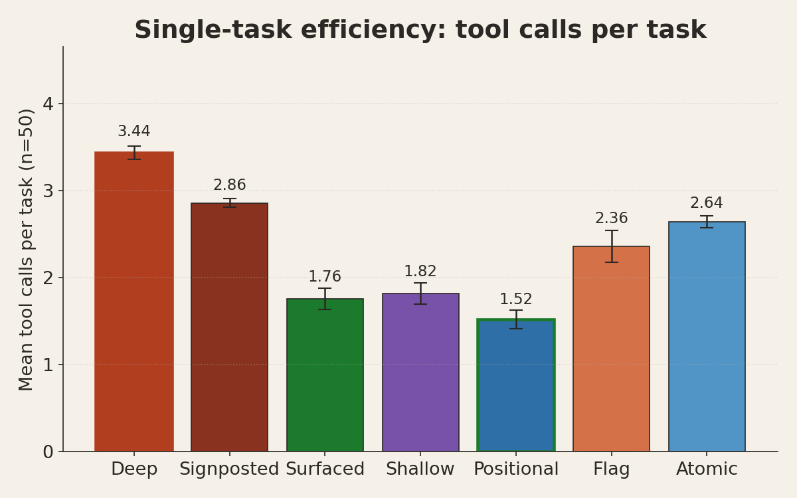
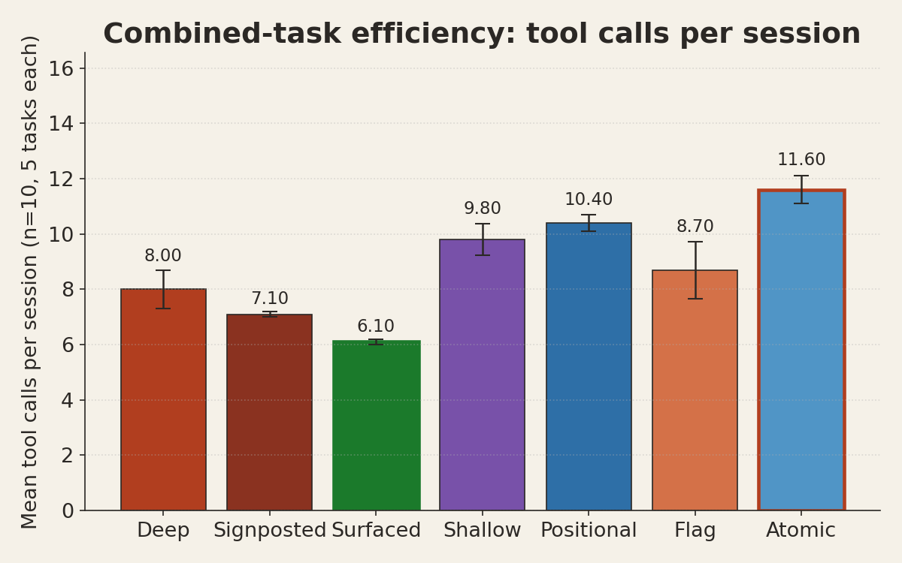
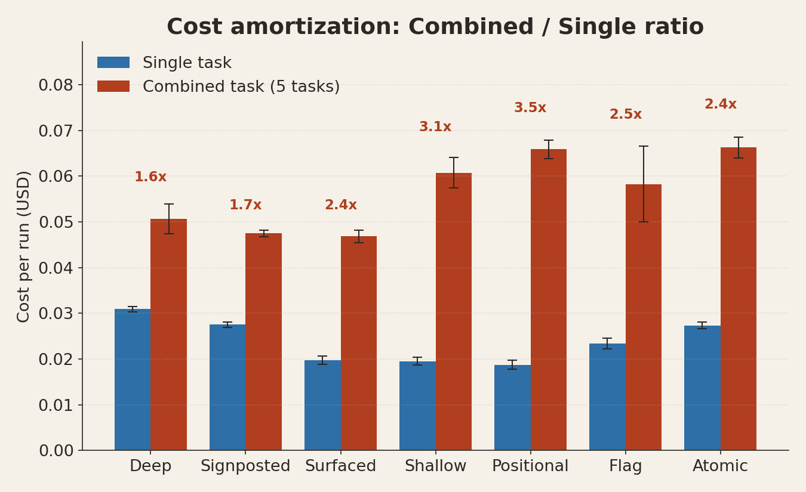
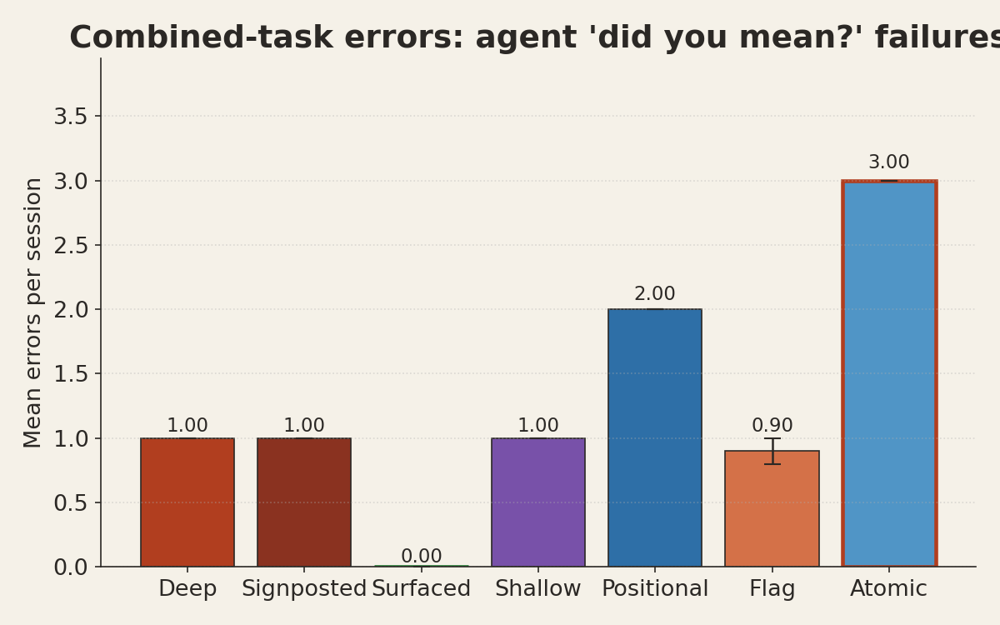

CLI structure and agent efficiency
How command-tree shape changes what an LLM-driven coding agent costs, errors, and achieves
Abstract
Does the shape of a CLI change how well an AI coding agent can use it? We ran 420 agent sessions across seven CLIs with identical capabilities but different command structures, from deeply nested to fully flat — including a git-style hybrid that surfaces seven common verbs as top-level aliases over a nested core.
The hybrid wins both regimes. Surfaced — nested underneath, with seven common verbs (init, dev, build, logs, ps, ls, seed) surfaced at the top level — ties for fewest tool calls on single tasks (1.76, near the flat winner Positional at 1.52) and outright wins the multi-task session at 6.10 tool calls — 24% better than Deep, with zero errors and zero help reads across the entire combined run.
The variant that "agents want flat enumeration" intuition would pick — every capability as its own top-level verb (Atomic) — remained worst or near-worst on errors. Flat enumeration doesn't stop the agent from guessing verbs that don't exist. A second probe, Signposted (Deep with canonical examples in --help), is a modest improvement on Deep but only when the agent reads help.
Takeaway: the git-style hybrid is empirically best. Earlier framings of "match shape to session length" were a useful heuristic when no variant straddled both regimes; with Surfaced tested, the recommendation collapses to one shape.

1 · Background
Flat CLIs are intuitively agent-friendly. Are they?
A common design heuristic holds that LLM coding agents prefer flat, fully-enumerable command-line surfaces to nested ones. The argument: agents have no persistent mental model of the tool, so they need every capability visible in a single --help response. Nested hierarchies force multiple help traversals and provide no benefit the agent can exploit.
This paper tests that heuristic. If flat is uniformly better for agents, then an all-flat variant (every capability exposed as a top-level kebab-case verb) should dominate every metric against any nested alternative. We find that it does not. We also tested a git-style hybrid (Surfaced) and a help-text-only intervention (Signposted) on top of the original five variants. The hybrid wins both single-task and multi-task regimes; the help-only intervention provides modest improvement.
2 · Methods
2.1 CLI variants
Seven independent Python wrapper scripts expose the same 40-capability surface area (mirroring the real Moose CLI, derived from its commands.rs) under seven different command structures. The original five (Deep, Shallow, Positional, Flag, Atomic) were probed in workflow run 24910674972; two additional design probes (Signposted, Surfaced) were run on the same harness in follow-up workflow run 24923611681:
| Variant | Shape | Example: search logs for "error" |
|---|---|---|
| Deep | 3-level namespace (project / infra / data / runtime / integration / meta) | moose infra logs --filter error |
| Signposted | Deep + canonical command examples shown in top-level --help | moose infra logs --filter error |
| Surfaced | Deep + 7 top-level verb aliases (git-style) | moose logs --filter error |
| Shallow | top-level verbs with scattered subcommands (mirrors real Moose) | moose logs --filter error |
| Positional | flat verbs, domain as positional argument | moose logs error |
| Flag | flat verbs, domain and subtype as flags | moose logs --filter error |
| Atomic | every capability is its own top-level kebab verb | moose search-logs error |
Each wrapper emits variant-appropriate help text on --help, accepts realistic invocations and returns canned success output (with side-effect mkdir on init to preserve cd affordance), and on unrecognized input prints a "did you mean…?"-style error. Every invocation is logged as a JSON line to $MOOSE_LOG_PATH with its argv, match result, and exit code. Surfaced's seven top-level aliases are init, dev, build, logs, ps, ls, seed — each dispatches to its canonical namespaced form. Signposted shares Deep's command surface but its moose --help output includes a "Common commands" section with five fully-formed canonical example invocations.
2.2 Tasks
Six task prompts covering typical framework operations:
a— init a new project namedeventswith templatepython-ckhb— search logs for "error"c— list tablesd— seed ClickHouse from a remote URLe— check running processescombined— all five, in order (a → d → e → c → b), within one agent session
2.3 Harness and isolation
Each run was executed inside a fresh minimal Ubuntu 24.04 Docker container with no pre-existing ~/.claude/ configuration (Dockerfile). The agent was invoked via claude -p --bare --model claude-sonnet-4-6. The --bare flag disables hooks, plugins, auto-memory, keychain OAuth, and CLAUDE.md auto-discovery, so the model's input is restricted to the task prompt plus whatever priors exist in its pretraining. Authentication was via ANTHROPIC_API_KEY only. Tool access was limited to Bash. Runner code: runner.container.sh.
2.4 Measurement
The full claude -p --output-format stream-json stream was captured per run. Derived metrics per (variant, task, rep):
- tool_calls — count of
Bashtool invocations - help_invocations — count of
moose …--helpcalls (frommoose.log) - errors — count of unknown-command exits (from
moose.log) - total_cost_usd — reported by the Claude API result event
- wall_seconds, tokens (input/output/cache)
Cell-level statistics are mean ± standard error over n=10 reps. Analysis code: parse.py. Raw per-run rows: results.n10.json.
2.5 Execution
The original 300-run matrix (5 variants × 6 tasks × 10 reps) ran as a GitHub Actions workflow (workflow definition) at concurrency 15, completing in 4 min 33 s wall time at $9.01. The follow-up adding Signposted and Surfaced contributed 120 additional runs on the same harness (~$3, ~1.5 min wall). Total: 420 runs, ~$12, 100% success rate across every cell.
3 · Results
3.1 Single-task efficiency: flat variants win, Surfaced ties

On single, isolated tasks, the flat Positional variant required the fewest tool calls, fewest help reads, and produced zero errors on average. Surfaced (1.76) is statistically indistinguishable from Positional and beats every other variant. The Deep variant required roughly 2× Positional on every metric and produced errors on ~1 task in 1 (mean 1.10 errors/task). Signposted (2.86) is a small improvement on Deep but still in the bottom group.
| Variant | Tools/task | Help/task | Errors/task | Cost/task |
|---|---|---|---|---|
| Positional | 1.52 ± 0.27 | 0.22 ± 0.20 | 0.00 | $0.019 |
| Surfaced | 1.76 ± 0.12 | 0.62 ± 0.11 | 0.00 | $0.020 |
| Shallow | 1.82 ± 0.38 | 0.70 ± 0.37 | 0.00 | $0.020 |
| Flag | 2.36 ± 0.43 | 0.86 ± 0.33 | 0.00 | $0.023 |
| Atomic | 2.64 ± 0.19 | 0.96 ± 0.32 | 1.12 ± 0.36 | $0.027 |
| Signposted | 2.86 ± 0.14 | 1.08 ± 0.13 | 1.02 ± 0.30 | $0.027 |
| Deep | 3.44 ± 0.23 | 1.74 ± 0.19 | 1.10 ± 0.33 | $0.031 |
Note: Surfaced is a strong runner-up worth flagging — it ties for fewest tool calls, has zero errors across all 50 runs, and matches Positional on cost. Its single-task performance is essentially indistinguishable from the flat winner.
3.2 Multi-task session efficiency: Surfaced wins outright

When the same tasks are bundled into one agent session, Surfaced minimizes tool calls, help reads, and errors simultaneously — the only variant to score zero on both help and errors. Signposted (7.10) edges out Deep (8.00) by avoiding one help round-trip. Atomic, the maximally flat variant, maximizes both tool calls and errors (3.00 errors/session vs 0.90 for Flag). Positional, the single-task winner, falls to second-worst.
| Variant | Tools/session | Help/session | Errors/session | Cost/session |
|---|---|---|---|---|
| Surfaced | 6.10 ± 0.10 | 0.00 | 0.00 | $0.047 |
| Signposted | 7.10 ± 0.10 | 1.00 | 1.00 | $0.047 |
| Deep | 8.00 ± 0.70 | 1.60 ± 0.40 | 1.00 | $0.051 |
| Flag | 8.70 ± 1.03 | 0.80 ± 0.20 | 0.90 ± 0.10 | $0.058 |
| Shallow | 9.80 ± 0.57 | 1.00 | 1.00 | $0.061 |
| Positional | 10.40 ± 0.31 | 1.00 | 2.00 | $0.066 |
| Atomic | 11.60 ± 0.50 | 1.50 ± 0.17 | 3.00 | $0.066 |
3.3 Cost amortization

The amortization ratio (combined ÷ single per-run cost) splits the variants into clear groups. Deep and Signposted amortize tightly (1.64× and 1.73×) — the agent learns the namespace once and reuses it. Surfaced sits at 2.37× because it doesn't need to learn the namespace at all — it uses the surfaced flat aliases throughout — but its absolute cost remains the lowest of any variant on the combined task.
Surfaced is cheapest in absolute terms in both regimes. Deep amortizes tightest. Positional pays full price every time (3.52×).
Ratios for all seven variants: Deep 1.64×, Signposted 1.73×, Surfaced 2.37×, Atomic 2.42×, Flag 2.49×, Shallow 3.11×, Positional 3.52×.
3.4 Error analysis

Errors in this harness are command-level failures (unknown verb, wrong subcommand) surfaced by the wrappers' did you mean…? exit-2 responses. The wrapper then has no other way to disambiguate — the agent must try again or read help. See §5.1 for trace-level examples of each variant's characteristic failure mode.
4 · Discussion
The git-style hybrid resolves both regimes
We initially saw a polarity flip between flat and nested across the original five variants. The Surfaced hybrid resolves both regimes simultaneously. "Match shape to session length" was a useful framing while we lacked a hybrid in the comparison set; with Surfaced tested, the recommendation collapses to one shape.
Surfaced's design is git-style: a nested CLI underneath, with the seven most-common verbs (init, dev, build, logs, ps, ls, seed) surfaced as top-level aliases that dispatch to their canonical namespaced form. The agent never needs to choose between flat and nested; the surface accepts both. In the combined-task trace below (§5.1.1), the agent issued five commands using only the flat alias forms — no help reads, no errors. Signposted (Deep with common-paths shown in --help) is a useful but smaller win: it doesn't change the command surface, only the help text, and agents that skip help can't benefit.
Structure is a mental-model scaffold, not a human concession
The canonical framing — "structure helps humans, flat helps agents" — does not fit these results either. For single tasks, an agent's structural exploration cost exceeds its benefit unless the surface admits a flat shortcut. Flat layouts minimize this overhead, and Surfaced inherits that benefit through its top-level aliases. For multi-task sessions, a namespaced CLI gives the agent a compact, once-paid mental model — but Surfaced lets the agent skip even that step by re-using the surfaced aliases.
Atomic is a cautionary design
The Atomic variant was motivated by the heuristic that flat maximal enumeration should be best for agents. It was worst or near-worst on every metric. The trace-level explanation (§5.1.2) is that flat kebab-case enumeration gives agents unlimited surface on which to guess plausible-sounding verbs (seed-ch, show-logs, log, etc.). No structure exists to constrain the guess; the only feedback is an error. In Surfaced, the seven aliases cover the common verbs and the rest of the namespace remains available — the agent's first guess is almost always correct.
Design rule
Build the git shape: nest the full surface, then surface the 5–7 most-common verbs as top-level aliases. This dominates both regimes empirically. If you can't surface aliases, pick by predominant workload — flat for single ops, nested for orchestration — but the hybrid is uniformly better when achievable.
5 · Trace evidence
5.1 Characteristic patterns per variant
All traces below are extracted from the original GH Actions artifact and the follow-up artifact (cli-structure-runs-reps10). Full per-run moose.log files capture every invocation with timestamp, argv, match result, and exit code. Timestamps below are truncated to HH:MM:SS UTC.
5.1.1 Surfaced — the winning pattern
runs/surfaced/combined/rep1/moose.logFive commands. Zero errors. Zero --help reads. The agent uses the surfaced top-level aliases throughout — never needing to learn the namespace structure because the common verbs are available flat:
05:30:19 init events --template python-ckh → matched:init 05:30:22 seed clickhouse --source-connection-string ... → matched:seed:clickhouse 05:30:27 ps → matched:ps 05:30:29 ls --tables → matched:ls 05:30:31 logs --filter error → matched:logs
The agent's first instinct on every task is the flat verb. Surfaced accepts it. There is no exploration phase, no namespace-learning phase, no help round-trip. This is what the headline "Surfaced wins both regimes" looks like at the command level.
5.1.2 Signposted — recovery via canonical examples in --help
runs/signposted/combined/rep1/moose.logThe agent guesses the flat form, fails, reads --help (which now shows canonical example invocations directly), and then routes all five tasks correctly using the namespaced form:
05:29:40 init events --template python-ckh → error:unknown 05:29:42 --help → help:top 05:29:44 project init events python-ckh → matched:init 05:29:46 data seed clickhouse --clickhouse-url ... → matched:seed:clickhouse 05:29:49 infra ps → matched:ps 05:29:51 data ls --type Table → matched:ls 05:29:54 infra logs --filter error → matched:logs
Compared to plain Deep, the per-verb correction is faster: --help shows moose data ls --type Table directly, so the agent picks the right invocation immediately. The intervention is help-text-only and only benefits agents that read help.
5.1.3 Atomic — verb hallucination
runs/atomic/b/rep5/moose.logThe wrapper's help surfaces only search-logs, yet the agent first reaches for four different invented-or-partial verbs before consulting help:
# agent-issued Bash command, single line with || chain moose logs --filter error 2>/dev/null \ || moose logs | grep -i error 2>/dev/null \ || moose log --filter error 2>/dev/null → error: unknown command 'logs'. Did you mean `moose search-logs`? # agent concedes and reads help moose search-logs --help → Usage: moose search-logs [QUERY] [-t|--tail] [-f|--filter <STRING>] # now correct moose search-logs error → [moose-runtime] 2026-04-23T12:00:00Z INFO server started on :4000
Three failed guesses (logs, log, logs | grep) before the agent consults help. This pattern (error:unknown → --help → matched) appears in 9 of 10 Atomic/b reps. The agent treats "search for error in logs" as grammatically cueing a verb containing logs, which is absent from this variant's lexicon. Surfaced (§5.1.1) avoids this entirely because logs is one of the surfaced top-level aliases.
5.1.4 Deep — namespace transfer
runs/deep/combined/rep1/moose.logAgent initially guesses as if the CLI were flat. One help read later, it correctly navigates three different top-level namespaces without re-consulting help:
20:37:04 init events --template python-ckh → error:unknown 20:37:05 --help → help:top # shows project/infra/data/runtime/integration/meta 20:37:08 project init events --template python-ckh → matched:init 20:37:10 data seed --source ... → matched:seed:clickhouse 20:37:12 infra ps → matched:ps 20:37:14 data ls → matched:ls 20:37:17 infra logs --filter error → matched:logs
One help read, one error, five successful commands across three namespaces. The agent has learned the namespace partition and applies it to subsequent tasks without further exploration. This is the amortization effect visible at the command level.
5.1.5 Shallow — subcommand hallucination (seed remote)
runs/shallow/combined/rep1/moose.logAgent reaches the seed step, guesses a non-existent subcommand inferred from the task phrasing ("from a remote ClickHouse"), then reads per-verb help to recover:
20:37:43 init events --template python-ckh → matched:init 20:37:46 seed remote --source-connection-string ... → error:unknown 20:37:48 seed --help → help:verb:seed # shows only `clickhouse` subcommand 20:37:53 seed clickhouse --clickhouse-url ... → matched:seed:clickhouse 20:37:55 ps → matched:ps 20:37:57 ls --tables → matched:ls 20:37:59 logs --filter error → matched:logs
"Seed from a remote database" cues the agent to try seed remote, a grammatically natural but non-existent subcommand. The shallow two-level hierarchy allows a targeted per-verb help read (seed --help) which rapidly surfaces the actual subcommand. This failure is cheaper to recover from than in Atomic, where there's no per-verb help to drill into.
5.1.6 Positional — same hallucination, worse recovery
runs/positional/combined/rep1/moose.log (pattern identical in 10/10 reps)Positional inherits Shallow's seed remote hallucination but lacks per-verb help as an efficient recovery, so the agent falls back to top-level help:
20:38:26 init events --template python-ckh → matched:init 20:38:29 seed remote --url ... → error:unknown 20:38:30 seed --help → error:unknown # no subcommand tree exists 20:38:32 --help → help:top 20:38:37 seed clickhouse --clickhouse-url ... → matched:seed:clickhouse 20:38:38 ps → matched:ps 20:38:40 ls --type table → matched:ls 20:38:43 logs --filter error → matched:logs
Two errors instead of one. The seed --help attempt fails because Positional has no per-verb help tree — help is a single top-level dump only. The agent's implicit model of "I'll drill into help for this verb" is wrong for this variant. The pattern was identical in 10/10 reps: same argv sequence, same two errors.
5.1.7 Flag — fast recovery via incremental flag expansion
runs/flag/combined/rep1/moose.logFlag's explicit-flag convention makes errors self-describing and recovery cheap:
20:39:14 init events --template python-ckh → matched:init 20:39:16 seed remote --url ... → error:incomplete # needs --source 20:39:18 seed remote --source clickhouse --url ... → matched:seed:clickhouse 20:39:20 ps → matched:ps 20:39:22 ls --tables → matched:ls 20:39:24 logs --filter error → matched:logs
The incomplete error tells the agent which flag is missing; one incremental flag addition fixes it. No help read required. This is the only variant where the most common recovery path involves no help traversal at all.
5.2 Help-invocation behaviour is revealing
Across all variants except Positional, the agent initiated a --help call in at least 70% of single-task runs without being prompted to. Even in Shallow, where the model has training-data priors on real Moose, 7/10 single-task runs read help first. The interpretation: absent strong priors, agents prefer to ground themselves against help before issuing an operational command. This preference exists regardless of CLI shape; shape determines only how much help traversal is required to reach a usable command.
6 · Limitations
- Single model. All measurements are Sonnet-4.6-specific. A Codex / GPT-5 rerun on the same harness is queued. Effect sizes are expected to shift; directional findings may not.
- Simulated tool. Wrappers produce canned output and do not actually reflect real Moose state. This isolates CLI structure as the variable but removes real-world state-dependence (e.g., a failed
seedrecovering by checking actual DB state). - Shallow priors. The Shallow variant matches real Moose, which the model plausibly encountered in training. Shallow numbers are biased toward the optimistic end. Even with that bias, Shallow did not win any metric — Positional beat it on single-task efficiency, Deep beat it on compound-task efficiency. The core findings survive removing Shallow entirely.
- Task dependency structure. The combined task is a sequence of five weakly-coupled operations on a shared hypothetical project. Tightly-coupled sequences (where step N depends on step N-1's output) may amplify the structure advantage; truly independent task lists may not exhibit it.
- Linear amortization assumption. The break-even projection (§3.3) assumes per-task marginal cost is constant after the first task. With n=10 and a 5-task combined session, we cannot rule out nonlinearity at larger N.
- Sample size per cell. n=10 is sufficient to identify large effects (the 2-3× gaps reported) but may miss smaller ones, particularly differences between mid-ranked variants.
- Surfaced and Signposted as design probes. These two were added in a follow-up workflow run (24923611681) on the same harness, container image, runner, and prompts. They share a model run-date (Sonnet 4.6, April 2026) with the original five. The headline result — Surfaced wins — relies on n=10 reps for the combined task; the directional finding is robust but the exact 6.10 figure carries the same n=10 uncertainty as the rest.
7 · Reproduction
Full source, harness, wrappers, tasks, parser, chart generator, and this report are in experiments/cli-structure/. Commit 0663a56.
On GitHub Actions (requires ANTHROPIC_API_KEY secret):
gh workflow run cli-structure-experiment.yml \ --repo 514-labs/agent-evals \ --ref claude/vibrant-mcnulty-2dac4a \ -f reps=10 -f concurrency=15
Locally:
cd experiments/cli-structure docker build -t cli-structure-test:latest . docker run --rm -v "$PWD/runs:/app/runs" \ -e ANTHROPIC_API_KEY=sk-... -e REPS=10 -e CONCURRENCY=15 \ cli-structure-test:latest python3 parse.py "$PWD" python3 make_charts.py "$PWD"
8 · Artifacts
- Per-run JSON (420 rows):
results.n10.json - Tabular report:
report.n10.txt - Full traces +
moose.logper run: original 300-run artifact · Surfaced/Signposted follow-up artifact (30-day retention) - Plot-generation code:
make_charts.py - Long-form markdown version of this report:
REPORT.md